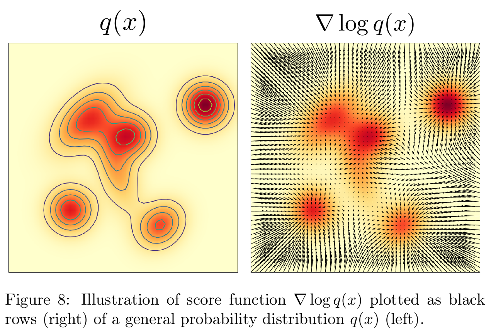
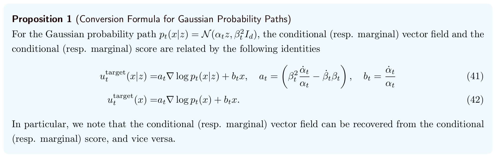
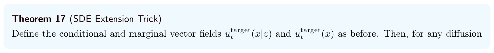
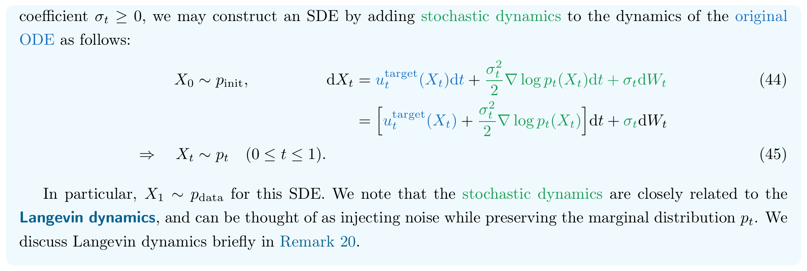
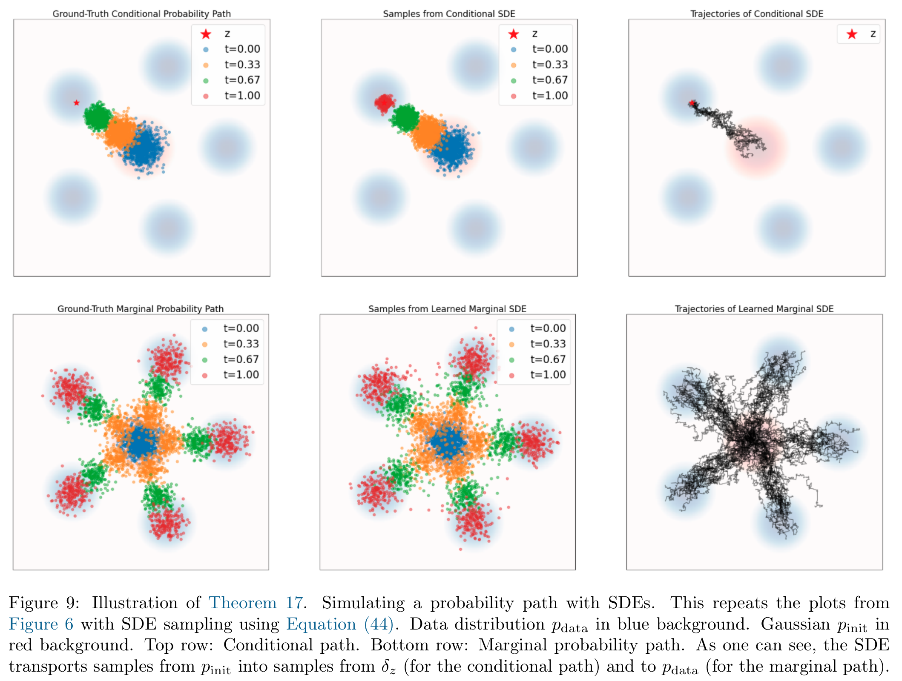
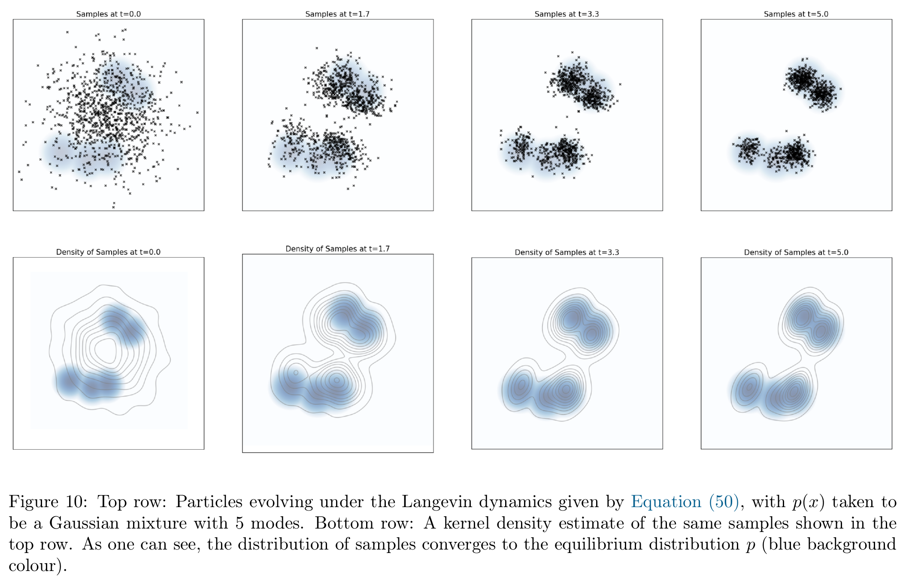
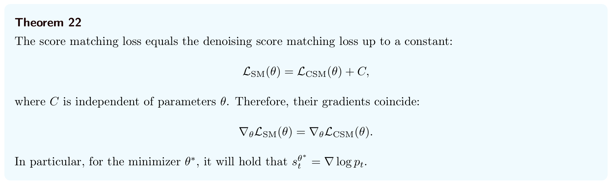
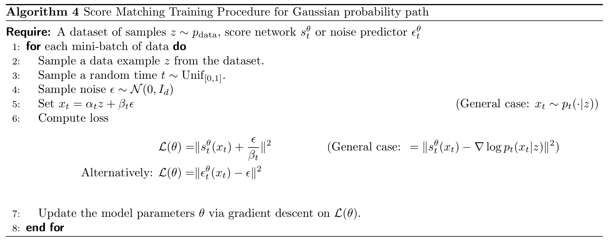
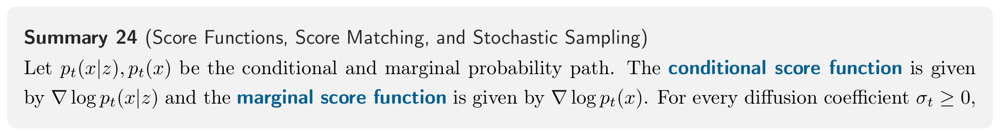
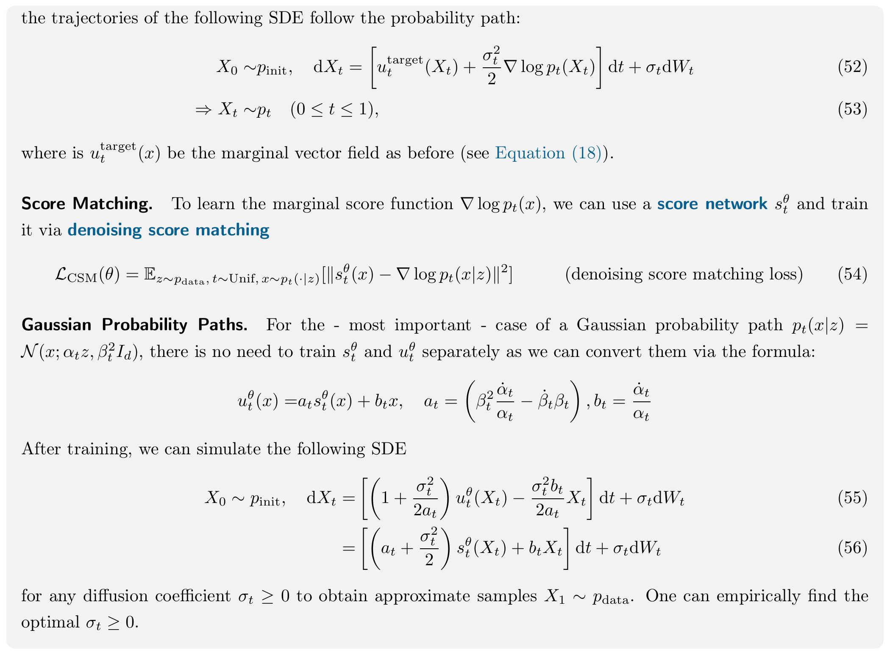

第 4 章 · 生成模型
Score Functions and Score Matching
上一节的 Flow Matching 直接学习把噪声分布推向数据分布的速度。这一节学习另一个量：当前位置附近的对数密度怎样变化，也就是 score，再用它构造生成的运动规则。
Flow Matching 与 Score Matching 是两种可选择的训练思路。对本章使用的同一高斯概率路径，可以直接学速度，也可以学 score 后换算成速度；两者不需要先后训练。
先把两节接起来：同一概率路径，不同预测目标
仍然从数据中抽取 z，独立抽取高斯噪声 ϵ，选一个时刻 t，合成网络的输入：
xt=αtz+βtϵ,ϵ∼N(0,Id).
这里的 βt 就是噪声前面的系数。回想线性例子 xt=tz+(1−t)ϵ：其中 αt=t, βt=1−t。写成 αt,βt，是为了也能讨论其他时间系数；线性例子始终是这条一般公式的一种具体选择。
αt,βt 是预先选择的时间系数，满足 α0=0,β0=1,α1=1,β1=0：t=0 对应噪声，t=1 对应数据。固定 z 看这些带噪样本，得到条件分布；把所有数据来源混在一起，得到整体分布 pt。两种训练都可以使用这样的输入，区别在于让网络回答什么：
| 训练思路 | 网络接收 | 希望学到的量 |
|---|---|---|
| Flow Matching | (xt,t) | 实现这条分布路径的速度 uttarget(xt) |
| Score Matching | (xt,t) | 当前整体分布的 score st(xt) |
两种训练都通过容易计算的条件标签，学习所需的整体量。还要区分训练方法与采样方式：Score Matching 学到的 score，既可以用于构造 ODE，也可以用于构造 SDE。
下面按 4.1–4.3 节依次回答：score 是什么 → 怎样用它生成 → 怎样训练得到它。前两节先讨论理想目标，4.3 节再用网络逼近。公式编号沿用原文，较长推导按需展开。
4.1 Conditional and Marginal Score Functions：条件与边缘 Score
Score 是什么：对数密度对位置的梯度
对一个可微且在当前位置为正的概率密度 q(x)，定义：
s(x)=∇xlogq(x)=q(x)∇xq(x).
∇x 表示对样本位置 x 求梯度，不是对网络参数求导。在一维中它是一个导数；在多维中，它把每个坐标方向的偏导数组成一个向量。
这个向量指向当前位置附近对数密度增长最快的方向。它描述局部变化，不是给样本打出的一个分数，也不直接等于样本运动的速度。
在一维中可以先这样读：s(x)>0，说明在这个位置稍微向右，密度会上升；s(x)<0，说明稍微向左，密度会上升。s(x)=0 只表示一阶变化为零，不保证这里一定是密度峰。多维的梯度把这种局部方向信息合在一个向量里。

左图给出密度的形状，右图把各位置的局部上升方向画成箭头。只沿这些箭头做梯度上升，不等于从这个分布采样。梯度上升容易把点推向密度峰；生成需要让整群样本形成正确的分布，后面还要说明 score 怎样参与动力学。
条件 Score 与边缘 Score：仍然是后验加权平均
回到已经选好的概率路径，分别定义：
st(x∣z):=∇xlogpt(x∣z),st(x):=∇xlogpt(x).
这里的 z 是干净数据，x 是时刻 t 的带噪位置。条件 score 假定我们知道来源 z；边缘 score 只看当前位置与时间，不知道它来自哪条数据。例如，训练时先抽到一张图片再给它加噪，我们知道原图；生成时只有当前的带噪状态，没有一张已知原图可供查询。
把每个数据点对应的条件密度，按数据分布混合起来，就得到当前时刻的整体密度：
pt(x)=∫pt(x∣z)pdata(z)dz.
但对数密度的梯度不能直接按原来的数据比例平均。给定当前位置 x 后，还要考虑：哪个来源更可能产生这里的状态？结果是：
st(x)=∫st(x∣z)qt(z∣x)pt(x)pt(x∣z)pdata(z)dz.(38)
这里 qt(z∣x) 是给定当前状态后的来源分布：更可能产生这个状态的来源，其条件 score 权重更大。这与 Flow Matching 的边缘化公式是同一种结构——把“条件速度”换成“条件 score”，仍然按当前状态下的来源概率平均。
先记住这个结论的用途：如果回归条件 score 标签能学到它们的条件均值，那么学到的就恰好是边缘 score。4.3 节将用它说明训练为什么成立；训练本身不需要显式算出这些后验权重。
展开：对混合密度求导，为什么得到后验权重？
这一步是在改写 score 的表达式，没有求解新的微分方程。先固定时刻 t，对位置 x 求导；z 是积分时遍历的数据来源。下面在相应密度为正、微分与积分可交换的条件下计算。
第一步：先处理最外层的对数。一维链式法则是 (logf(x))′=f′(x)/f(x)，对每个坐标应用它，就得到：
st(x)=∇xlogpt(x)=pt(x)1∇xpt(x).
此时要计算的是右边的 ∇xpt(x)。我们没有把“混合密度的对数”拆成“各条件密度对数的平均”；对数一般不能这样穿过积分。
第二步：把混合密度代入被求导的那一项。
∇xpt(x)=∇x∫pt(x∣z)pdata(z)dz=∫∇xpt(x∣z)pdata(z)dz.
第二行把对 x 的求导移进了对 z 的积分。pdata(z) 只依赖来源 z，对 x 求导时是常数，因此导数只作用在 pt(x∣z) 上。
把这个结果放回第一步：
st(x)=pt(x)1∫∇xpt(x∣z)pdata(z)dz.
第三步：把积分里的式子整理成两个熟悉的因子。对 z 积分时，pt(x) 不随 z 变化，因此可以把外面的 1/pt(x) 放进积分：
st(x)=∫pt(x)∇xpt(x∣z)pdata(z)dz.
接着，同乘、同除一个 pt(x∣z)，数值没有改变：
pt(x)∇xpt(x∣z)pdata(z)=pt(x∣z)∇xpt(x∣z)⋅pt(x)pt(x∣z)pdata(z).
可以反过来检查：右边的 pt(x∣z) 约掉后，就回到左边。这样整理的目的，是让第一个因子变成条件 score：
pt(x∣z)∇xpt(x∣z)=∇xlogpt(x∣z)=st(x∣z).
第四步：认出第二个因子是 Bayes 后验。先抽 Z∼pdata，再抽 Xt∼pt(⋅∣Z)，两者的联合密度是 pt(x∣z)pdata(z)。已知 Xt=x 后，用联合密度除以 x 的边缘密度：
qt(z∣x)=pt(x)pt(x∣z)pdata(z).
这就是“已经出现在这里的样本，可能来自哪个 z”的条件密度。分母把所有来源的贡献归一化：
∫qt(z∣x)dz=pt(x)∫pt(x∣z)pdata(z)dz=1.
第五步：把两个因子分别换成它们的记号。
st(x)=∫st(x∣z)qt(z∣x)dz.(39)
也就是 st(x)=E[st(x∣Z)∣Xt=x]：固定当前的 (x,t)，对仍然可能的来源做后验平均。后验权重是对混合密度求导后自然整理出来的，不是额外规定的平均方式。虽然它也依赖 x，但这里的求导已在第二步完成，后面只是代数改写，不需要再对后验求一次导数。
Example 15：高斯条件路径的 Score 怎样算？
继续使用高斯条件路径 pt(⋅∣z)=N(αtz,βt2Id)。它可以通过 x=αtz+βtϵ、ϵ∼N(0,Id) 直接采样；固定 t,z 后，中心是 αtz，每个方向的标准差是 βt。
对高斯密度取对数，再对位置求导，结果很简单：
st(x∣z)=−βt2x−αtz.(40)
分子是当前位置偏离高斯中心的距离；负号让箭头指回当前中心 αtz，分母用方差 βt2 调整尺度。它描述当前位置的密度变化，并不是“直接走向最终数据点 z”的速度。这里要求 βt>0，收缩到点的终点需按极限理解。
展开计算：高斯密度取对数，再对位置求导
先写出密度，再取对数。乘在指数前的系数变成一项常数，指数里的平方距离则保留下来：
pt(x∣z)=(2πβt2)d/21exp(−2βt2∥x−αtz∥2).
logpt(x∣z)=Ct−2dlog(2πβt2)−2βt2∥x−αtz∥2.
对 x 求导时，t,z,αt,βt 都固定。Ct 不含 x，导数为零。在一维中，平方项的求导就是 dxd(x−αtz)2=2(x−αtz)；多维时逐坐标计算，得到同样形式的向量。因此：
∇xlogpt(x∣z)=0−2βt21⋅2(x−αtz).
约去系数中的 2，就得到式 (40)。
用一个小例子接回上一节。取线性路径 αt=t,βt=1−t，本次抽到 z=3,ϵ=−1,t=0.5，则：
xt=0.5×3+0.5×(−1)=1.
Flow Matching 的条件速度标签为 z−ϵ=4；这个状态的条件 score 则为：
s0.5(1∣3)=−0.521−0.5×3=2.
同一个输入 (1,0.5)，速度标签是 4，score 标签是 2，因为预测的量不同。这些是本次抽样的条件标签；只给定输入而不知道来源时，边缘目标还要对可能的来源取条件均值，不能直接认定为这两个数。
Proposition 1：高斯路径下，Score 与目标速度可以转换
既然 score 不等于速度，为什么学 score 还能生成？关键是：对这里选定的高斯路径，score 可以通过一个已知公式换算成上一节需要的目标速度。

用我们刚定义的 st 记号，边缘速度的关系是：
uttarget(x)=atst(x)+btx,at=βt2αtα˙t−β˙tβt,bt=αtα˙t.(42)
at,bt 由选定的 αt,βt 算出，不是额外学习的参数。score 告诉我们局部密度的变化；乘上系数、再加上 btx，才得到实现该概率路径的目标速度。这也说明为何不能把 score 本身直接当成生成速度。
在线性路径 αt=t,βt=1−t 下，α˙t=1,β˙t=−1，系数化为 at=(1−t)/t, bt=1/t，所以：
uttarget(x)=t1−tst(x)+tx,0<t<1.
条件速度与条件 score 也满足同样的转换。继续上面的例子，t=0.5,x=1 时，这条关系变成“速度 = score + 2”：代入条件 score 标签 2，得到条件速度标签 4，正好接回 z−ϵ。
展开：从条件公式得到速度与 Score 的转换
第一步：用 score 表示原公式里的 z。由式 (40) 移项，在 αt=0、βt>0 时：
βt2st(x∣z)αtzz=αtz−x,=x+βt2st(x∣z),=αtx+βt2st(x∣z).
第二步：代入上一节的条件速度公式。这里点号表示时间导数，即 α˙t=dαt/dt、β˙t=dβt/dt。
uttarget(x∣z)=(α˙t−αtβtβ˙t)z+βtβ˙tx.
把第一步得到的整个分式替换 z，并把分母 αt 除进前面的系数：
uttarget(x∣z)=(α˙t−αtβtβ˙t)αtx+βt2st(x∣z)+βtβ˙tx=(αtα˙t−βtβ˙t)[x+βt2st(x∣z)]+βtβ˙tx.
第三步：展开括号，把含 x 和含 score 的项分别合并。x 前的系数为：
(αtα˙t−βtβ˙t)+βtβ˙t=αtα˙t=bt.
score 前的系数为：
βt2(αtα˙t−βtβ˙t)=βt2αtα˙t−βtβ˙t=at.
于是，条件关系变成：
uttarget(x∣z)=atst(x∣z)+btx.(41)
第四步：从条件量变成边缘量。固定 (x,t)，对来源 z 按同一个后验 qt(z∣x) 平均。左边根据上一节的边缘化定理变成目标边缘速度；右边的 at,bt,x 不随 z 变化，可以移到积分外：
uttarget(x)=atst(x)∫st(x∣z)qt(z∣x)dz+btx1∫qt(z∣x)dz=atst(x)+btx.
因此，式 (42) 同时用到了两个已知结果：条件速度可以按后验平均，条件 score 也可以按这个后验平均。
反过来，在 at=0 时，st(x)=(uttarget(x)−btx)/at。这些含分母的表达式要求相应分母非零；例如 α0=0，不能直接把起点代入含 1/αt 的公式，端点需要依据极限或采用稳定的参数化处理。
这就是本节与 Flow Matching 的连接：上一节直接训练速度网络；这一节可以训练 score 网络，再计算 utθ(x)=atstθ(x)+btx，把它交给 ODE 求解器。能够换算预测目标，不表示两种原始损失完全相同：误差经系数缩放后，时间权重也可能改变。
Remark 16：预测干净数据，也能换算成 Score
前面让网络预测 score。现在沿用同一份训练数据，换一个更直观的问题：给你带噪状态 xt=αtz+βtϵ 和时刻 t，请估计原来的干净数据 z。做这个预测的网络 Dtθ(x)，就叫 Denoiser（去噪器）。
输入仍是 (xt,t)，训练标签改为干净数据 z。例如，给一张图片加噪后，把带噪图片交给网络，用原图计算平方误差 ∥Dtθ(xt)−z∥2。原图只用于训练时计算误差，网络输入里没有它。选择这种输出方式时，训练这个去噪网络即可，score 随后用公式算出。
为什么下面出现“条件均值”？同一个带噪状态可能来自不同的原图，网络仅凭 x,t 通常不能唯一找回本次的来源。平方误差下，理想预测会对这些可能的干净数据，按它们在当前状态下的可能性取平均：
Dt(x):=E[Z∣Xt=x].
Dt 表示这个理想的估计函数，Dtθ 是训练后对它的近似。它们估计的是干净数据；输出与数据同维度，可能是多个候选的平均，不保证恰好等于某一个真实原图。
它为什么能换算成 score？已知原始数据 z 时，条件 score 是 (αtz−x)/βt2。不知道来源时，要对可能的 z 做后验平均。固定当前的 x,t 后，αt,βt,x 都不变，只有 z 这一项需要平均；因此，把它换成平均值 Dt(x) 就得到：
st(x)=βt2αtDt(x)−x.
在实际网络中，用 Dtθ(x) 代替 Dt(x)，就得到 score 估计。例如仍取 αt=t,βt=1−t，在 t=0.5,x=1 时，假设网络预测的干净数据是 2.6，那么换算结果为：
s0.5θ(1)=0.520.5×2.6−1=1.2.
这里的 2.6 是为了演示换算而假设的网络输出；1.2 也只是相应的 score 估计。预测干净数据之后，就能通过已知公式得到 score，再构造生成用的速度或漂移。采样仍然逐步推进，不能直接把干净数据估计当作下一时刻的位置。
展开：Denoiser 的训练目标，以及均值怎样代入 Score
上述“预测原图”的训练，可以写成普通的平方误差回归：
LD(θ)=Et,z,ϵ[∥Dtθ(αtz+βtϵ)−z∥2].
在均方回归的理想条件下，给定输入后的最优预测就是 E[Z∣Xt=x]。这与前面“条件标签回归学到条件均值”的逻辑相同。换算输出后，损失的时间权重可能不同，这里不把该损失与原始 CSM 损失说成完全相同。
现在固定 x,t，只对可能的来源 Z 平均。先代入条件 score，再把不随 Z 变化的量提出：
st(x)=E[st(x∣Z)∣Xt=x]=E[βt2αtZ−xXt=x]=βt2αtE[Z∣Xt=x]−x=βt2αtDt(x)−x.
这里被平均的是来源 Z，当前位置 x 不动，αt,βt 也固定，所以它们可以从期望中提出。最后一行只是把 E[Z∣Xt=x] 换成定义好的 Dt(x)。
再移项，就有 Dt(x)=(x+βt2st(x))/αt。前面的 score 公式要求 βt>0；这个反向换算还要求 αt=0，端点需单独处理。
4.2 Sampling with SDEs：用 Score 构造随机采样
先假设已经知道正确的 score。由 uttarget=atst+btx，我们已经能算出 ODE 速度，从噪声出发生成样本。这里进一步问：能不能让轨迹带有随机波动，同时仍保持原来 ODE 规定的分布路径？
从 ODE 到 SDE：加随机扰动，也要调整漂移
用 vt 表示要构造的 SDE 总漂移，σt 表示运动过程中布朗噪声的强度系数。对比两种运动规则：
已有的 ODE：要构造的 SDE：dXt=uttarget(Xt)dt,dXt=vt(Xt)dt+σtdWt.
这正是前篇 Diffusion Models 的形式 dXt=utθ(Xt)dt+σtdWt：前篇的 utθ 表示整个 SDE 漂移，在这里对应 vtθ；它不能直接与 ODE 目标速度画等号。前篇给出模型形式，本节补上怎样构造这个漂移。
先分清 βt 与 σt：分布宽度和新增噪声
βt 来自构造带噪状态的式子，线性例子中就是 1−t：
xtαt=αtz+βtϵ,=t,βt=1−t（线性例子）.
βt 回答的是：固定同一个干净数据 z，时刻 t 的带噪样本散得多开？因为 ϵ 的各坐标标准差为 1，乘上非负系数 βt 后，标准差就是 βt，方差是 βt2。所以条件分布写成 N(αtz,βt2Id)；这里说的是给定来源 z 后的分布宽度。
σt 回答的是：沿 SDE 往前走一小步时，新加入多大的随机位移？步长为 h 时，这部分位移近似为：
这一步新增的随机位移σthξ,ξ∼N(0,Id).
每一步新增位移的标准差是 σth。因此，βt 描述希望形成的条件分布，σt 控制运动中注入的新噪声，两者不能互换。
直接在原 ODE 上加噪声，通常会让分布额外扩散。我们想保留的是相同时刻“整群点的密度图”，因此需要同步修正漂移；score 恰好提供这项修正。
Theorem 17：加噪声时，为什么还要加一项 Score？


答案是把总漂移选为 vt=uttarget+2σt2st。从 X0∼pinit 出发，得到：
dXt=[uttarget(Xt)+2σt2st(Xt)]dt+σtdWt.(44)
- uttarget：原来推动分布从噪声走向数据的速度。
- σtdWt：新加入的随机扰动。
- 2σt2st：与噪声配套的漂移修正，用来保持原来的分布演化。
中括号里的两项合起来，才对应前篇 SDE 的整个漂移。这里从实现指定 pt 的 ODE 速度出发，配上同一 pt 的 score；对任意网络随意加一项 score，并没有这样的保证。
在相应正则性与唯一性条件下，这个 SDE 仍满足 Xt∼pt。保持相同的是每个时刻的边缘分布，单条轨迹可以完全不同。当 σt=0 时，就回到原来的 ODE。

上排固定一个数据终点，下排覆盖整个数据分布。和上一节的 ODE 对比，轨迹出现了随机波动；要比较的仍是同一时刻整群样本的分布，而不是要求每个样本沿原来的路线走。
采样用的 σt 可以在 score 网络训练完成后选择。更换 σt 时，也要同步重算配套的漂移修正。固定整个漂移、只改噪声，一般会改变分布；可以复用的是学到的 score。
Example 18：高斯路径下，可以只用 Score 表达漂移
式 (44) 同时写了目标速度和 score，看起来像是需要学两个函数。但对这里的高斯路径，4.1 节已经给出 uttarget=atst+btx。把它代入漂移中的第一项：
uttarget(x)+2σt2st(x)=atst(x)+btx+2σt2st(x)=(at+2σt2)st(x)+btx.
两个乘着 score 的系数相加，再把 x 换成轨迹当前位置 Xt，就得到：
dXt=[(at+2σt2)st(Xt)+btXt]dt+σtdWt.(46)
给定高斯路径的系数，只用边缘 score 就能算出整个 SDE 漂移。
把真实 score 换成学到的网络预测，就得到实际使用的漂移：
vtθ(x)=(at+2σt2)stθ(x)+btx.
因此，同一个 score 网络可以支持 ODE 采样或 SDE 采样：取 σt=0，漂移就是转换后的 ODE 速度；取非零 σt，则同时使用修正后的漂移和随机增量。
用线性例子核对两个噪声系数：在 t=0.5 时，条件分布是 N(0.5z,0.25Id)，标准差为 0.5。即使选择 σt=0，从不同随机起点出发、按对应的条件 ODE 运动，一群样本仍能形成这个分布。关掉途中新增的噪声，并没有关掉初始采样的随机性，也没有改掉预设的 βt=1−t。若改用 SDE，就要使用上面配套的漂移修正，才能维持同一分布路径。
Theorem 19：Fokker–Planck 方程解释这项修正
总漂移的公式已经给出，接下来核对它为什么能保持原来的分布路径。上一节的连续性方程描述 ODE 下的概率收支；对于 SDE，噪声还会引起扩散，需要多一项。沿用前面的总漂移记号 vt：
dXt=vt(Xt)dt+σtdWt.
当 σt 只依赖时间、作用于各个坐标方向时，分布满足 Fokker–Planck 方程：
∂tpt=−div(ptvt)+2σt2Δpt.(49)
右侧第一项是漂移造成的概率流动，第二项是噪声造成的扩散；Δ 是表示空间二阶变化的拉普拉斯算子。这里用方程核对分布变化，不需要先学会求解这个偏微分方程。
把 vt=uttarget+2σt2st 代入，score 修正对分布的贡献恰好是 −2σt2Δpt。它和噪声引起的扩散相抵消：
∂tpt=−div(ptuttarget)score 修正的贡献−2σt2Δpt+随机噪声的贡献2σt2Δpt.
后两项抵消，只剩原来 ODE 的连续性方程。因此，在相同初始分布与适用条件下，指定的分布路径仍然成立。
展开代入：Score 修正为什么恰好抵消扩散项？
先补齐记号：这里的空间导数都对 x 计算，拉普拉斯算子把各坐标方向的二阶导数相加：
Δpt=i=1∑d∂xi2∂2pt=div(∇pt).(48)
先看 score 修正会给分布带来哪一项。把总漂移 vt=uttarget+2σt2st 代入漂移项：
−div(ptvt)=−div(ptuttarget+2σt2ptst)=−div(ptuttarget)−2σt2div(ptst).
这里用到散度的线性性质：和的散度等于散度之和。σt 不依赖位置，所以对空间求导时可以把它作为常数提出。
再把新增项中的 ptst 化简。用 score 的定义，密度因子恰好约掉：
ptst=ptpt∇xpt=∇xpt.
再对两边取散度，用拉普拉斯算子的定义：
div(ptst)=div(∇xpt)=Δpt.
因此，修正带来的新增项就是 −2σt2Δpt。最后把 Fokker–Planck 方程本来就有的 +2σt2Δpt 加回去，得到正文中的抵消关系。这也解释了漂移为什么要加上 +2σt2st：它经过负散度后，产生了需要的负扩散项。
抵消的是分布演化中新增的两项，不是单条轨迹上的随机位移。路径仍会随机波动；整群样本的分布却可以保持原定的演化。这个方程用于说明采样构造为何有效，后面的训练仍采用回归损失。
可选补充：Remark 20，Langevin Dynamics 怎样保持一个分布？
如果概率路径不随时间变化，即 pt=p，可取 uttarget=0。此时剩下：
dXt=2σt2∇logp(Xt)dt+σtdWt.(50)
这就是 Langevin dynamics（朗之万动力学）。在适用条件下，如果初始样本已经服从 p，之后仍服从 p：score 漂移与噪声扩散配合，维持这个分布。

图中时间延伸到 5，展示了从其他初始分布逐渐接近平衡分布的情形。“从 p 出发保持 p”与“从其他初始分布出发收敛到 p”是不同结论。后者需要进一步的遍历性、噪声与时间条件，不能仅凭平稳性就保证，更不是有限几步便精确得到 p。
Remark 21 的另一个可选方向：GLASS Flows 通过额外的采样机制与 ODE 演化组合，构造随机转移。固定 ODE 和初值本身仍给出确定轨迹；随机性来自额外的机制。这不是下面 score matching 损失成立所必需的内容。
4.3 Score Matching：把 Score 变成可学习的目标
前面回答了“如果知道 score，怎样生成”。现在回到训练：我们只有数据样本，算不出整体密度，怎样让网络学到它的 score？这里沿用 Flow Matching 的关键办法：不直接提供难算的边缘目标，而是提供能算出的条件标签。
Score 网络、SM 损失与条件 Score 标签
用网络 stθ(x) 逼近边缘 score st(x)=∇xlogpt(x)。网络接收当前状态与时间，输出一个与 x 同维度的向量。
定义里有梯度，不代表训练时要先学习密度，再对密度求导。这里的网络直接输出一个向量；我们用下面的监督标签，让这个向量逐渐逼近真正的 score。输入、预测、误差、参数更新，仍然是回归训练的流程。
这里要区分三个量：st(x) 是想学到、但不能直接计算的目标；st(x∣z) 是知道训练数据 z 后可以计算的标签；stθ(x) 是由可训练参数 θ 决定的网络预测。训练就是调整第三个量，让它逼近第一个量；第二个量为这件事提供可用的监督。
理想的 Score Matching（SM）损失，是预测 score 与边缘 score 的均方误差：
LSM(θ)=Et,x∼pt[∥stθ(x)−st(x)∥2].
其中 t∼Unif[0,1]。困难在于右边的目标 st(x) 通常未知。训练时却知道抽到的数据点 z，于是改用条件 score：
LCSM(θ)=Et,z,x[∥stθ(x)−st(x∣z)∥2].
这里依次抽取 t∼Unif[0,1]、z∼pdata、x∼pt(⋅∣z)。CSM 是 Conditional Score Matching；在这里的加噪构造中，也称为 Denoising Score Matching（去噪 score matching）。
读这个损失时，先看方括号：网络预测减去本次可计算的标签，再把各坐标误差平方后相加。外面的期望表示对不同时间、不同数据和不同加噪结果平均；实际用小批量样本的平均误差估计它。优化器根据这个误差更新 θ，这里训练用的参数梯度，与定义 score 时对位置 x 求的梯度，是两件事。
数据点 z 用于构造输入和标签，不交给网络。网络要从 (x,t) 预测混合分布的 score，而不是在已知终点的前提下计算条件 score。
上述期望损失的讨论要求期望有限。若零噪声端附近的标签发散，训练时需要限制时间范围或使用合适的权重；含除法的标签要求 βt>0。
Theorem 22：为什么条件标签能训练边缘 Score？

在所需期望有限、可交换求导与期望等条件下，SM 与 CSM 两种期望损失只差一个与 θ 无关的加法常数，因此参数梯度相同。它对应上一节“FM 可以用 CFM 来训练”的结论；这里没有在说 Flow Matching 与 Score Matching 的损失相同。
这个结论也可以接回 4.1 节：同一个 (x,t) 可以由不同的干净数据产生，因而对应不同的条件 score 标签。网络看不到来源 z，对同一个输入只能给出一个预测；平方误差回归的理想预测，就是这些可能标签的条件均值：
平方误差回归的理想目标E[st(x∣Z)∣Xt=x]=∫st(x∣z)qt(z∣x)dz=st(x).
这就是前面推导后验平均公式的用途：它说明，条件标签平均之后正好是我们想学的边缘 score。训练不必在每个位置收集所有标签再手工平均；按联合分布抽样并最小化回归误差，就在优化这个期望目标，也不需要提前计算后验权重。
把两节并排想：上一节，条件速度的回归均值是边缘速度；这一节，条件 score 的回归均值是边缘 score。可计算的标签不同，用条件回归学习整体目标的逻辑相同。
原框中“最优网络等于真实 score”的结论，要结合网络能够表示目标、达到相应最优解等理想条件理解；实际训练得到的是近似。期望梯度一致，也不表示每个小批量的梯度完全一样。
Example 23：高斯路径下，Score 标签就是缩放后的噪声
抽到 z,ϵ,t 后，用 xt=αtz+βtϵ 合成带噪状态。这个 xt 是一次训练时直接构造的输入，不需要先沿轨迹从 0 模拟到 t。
把它代入式 (40)。分子中先消去两项 αtz，分母再约掉一个 βt：
st(xt∣z)=−βt2xt−αtz=−βt2(αtz+βtϵ)−αtz=−βt2βtϵ=−βtϵ.(51)
因此，标签只需要本次抽到的噪声和已知系数，不用计算真实数据密度，也不用求解 ODE 或 SDE。对应的损失是：
LCSM(θ)=E[stθ(xt)+βtϵ2].
注意这里是加号，因为“预测减标签”减去的是 −ϵ/βt。现在可以具体比较两节的训练了。在线性路径 xt=tz+(1−t)ϵ、0<t<1 下：
| 训练 | 网络输入 | 本次条件标签 |
|---|---|---|
| CFM | (xt,t) | 速度：z−ϵ |
| CSM | (xt,t) | Score：−ϵ/(1−t) |
前者预测“怎么动”，后者预测“局部密度怎么变”。接下来换一种更方便的输出形式：既然 score 标签就是缩放后的噪声，为什么不直接预测噪声？
从 Score 预测到噪声预测：重新参数化与重新加权
先对齐刚才的记号：上表用了线性例子，所以写 −ϵ/(1−t)；下面回到一般高斯路径 xt=αtz+βtϵ，因此写 −ϵ/βt。在线性例子里，βt=1−t，两种写法完全一致。
再区分“标签”和“预测”：ϵ 是训练时实际抽到、因此已知的标准高斯噪声；ϵtθ(x) 是网络根据带噪状态作出的噪声预测。输入里真正加上的项是 βtϵ，而这里选择让网络预测缩放前的 ϵ。
条件 score 标签是噪声标签乘以 −1/βt。相应地，把网络的噪声预测乘以同一个系数，就得到 score 估计：
stθ(x)=−βtϵtθ(x).
如果继续使用上表的线性例子，这一行就是 stθ(x)=−ϵtθ(x)/(1−t)。因此，这里既有从具体系数 1−t 回到一般记号 βt，也有从已知训练标签 ϵ 转到网络预测 ϵtθ(x)，不是引入了新的噪声参数。
“重新参数化”就是换一种网络输出的表达方式。选择预测噪声后，不必再训练第二个 score 网络。把这个换算代入 CSM 损失，会得到：
LCSM(θ)=E[βt21∥ϵtθ(xt)−ϵ∥2].
展开代入：Score 误差为什么变成带权的噪声误差？
把 stθ=−ϵtθ/βt 代入预测减标签的表达式：
stθ(xt)+βtϵ=−βtϵtθ(xt)+βtϵ=−βtϵtθ(xt)−ϵ.
误差平方后，负号消失，分母变成 βt2，因此有：
stθ(xt)+βtϵ2=βt21∥ϵtθ(xt)−ϵ∥2.
对抽到的时间、数据和噪声取期望，就得到正文中的带权噪声回归。这个等式要求预测之间也按上述公式转换。
进一步去掉这个权重，就得到这里介绍的 DDPM 简化噪声预测目标：
LDDPM(θ)=Et,z,ϵ[∥ϵtθ(αtz+βtϵ)−ϵ∥2].
换输出形式和去掉时间权重是两步。前一步按公式换算；后一步改变各时间段误差的重要性，因此实际训练梯度会变。正权重下，理想的逐时刻回归仍预测噪声的条件均值，但有限网络的训练效果可能不同。
Algorithm 4：一次训练更新做什么？

每个小批量按同一流程进行：独立抽取数据、时间与噪声 → 构造 xt → 比较预测与标签 → 更新网络参数。
继续用前面的 z=3,ϵ=−1,t=0.5：网络输入仍是 (1,0.5)。若训练 score 网络，本次标签是 2；假设它目前输出 1.6，这个样本的平方误差就是 (1.6−2)2=0.16。对小批量误差取平均，再对参数 θ 反向传播，完成一次更新。之后重新抽样，重复这个过程。
如果选择上述简化噪声预测目标，仍按这个流程训练，本次标签是 −1。网络看不到本次的干净数据或噪声来源，理想预测是给定输入后的噪声条件均值，并不保证能精确还原每一次加进去的噪声。
训练完成后：把预测转换成漂移，再逐步生成
训练时直接合成输入与标签。生成时则从新的 X0∼pinit 出发，固定网络参数，逐步更新样本。根据训练时选择的输出形式，使用下表对应的一行，得到 score 估计：
| 选择的网络输出 | 换算得到的 score 估计 stθ(x) |
|---|---|
| Score | stθ(x) |
| 噪声 | −ϵtθ(x)/βt |
| 干净数据（Denoiser） | βt2αtDtθ(x)−x |
三种输出在这里汇合：前面 Remark 16 的干净数据预测，也能接到同一套采样步骤。得到 stθ 后，用已知的高斯路径系数计算总漂移：
vtθ(x)=(at+2σt2)stθ(x)+btx.
再用前面学过的 Euler–Maruyama 方法：
Xt+h≈Xt+hvtθ(Xt)+σthξt,ξt∼N(0,Id).
这里 ξt 是每一步重新独立抽取的噪声，与训练时构造标签的 ϵ 区分。σt=0 时成为 ODE 采样；σt>0 时，还要加入随机增量及与之配套的漂移修正。
每一步可以按这个顺序读：把当前状态和时间交给网络 → 得到 score 估计 → 换算成漂移 → 加上漂移位移与随机位移 → 得到下一时刻状态。生成时没有已知数据终点 z，因此也不再构造训练标签；网络输出现在用于移动样本，而不是用于更新参数。
这些转换在对应系数有定义的时刻使用；涉及 α0=0 或 β1=0 的端点，要依据极限或稳定参数化单独处理。实际网络与有限步求解得到的是近似样本，终点分布接近数据分布是训练与采样希望实现的目标。
Summary
回头看这一章，可以把它与 Flow Matching 接成一条完整的思路：
- 先定路径：用数据、噪声和时间系数规定中间分布，希望它从噪声走向数据。
- 再学可用的函数：Flow Matching 回归条件速度标签；Score Matching 回归条件 score 标签，也可以改为预测噪声。理想回归学到的是给定当前输入后的条件均值。
- 最后生成：速度可直接用于 ODE；本章高斯路径的 score 可先转换成速度。选择 SDE 时，还要加入配套的漂移修正与随机扰动。
本章新增的关键，是把“估计分布的局部变化”与“构造生成运动”连接起来。训练阶段学习函数，生成阶段调用这个函数推进样本。


References
[1] Peter Holderrieth and Ezra Erives. An Introduction to Flow Matching and Diffusion Models. MIT 6.S184: Generative AI With Stochastic Differential Equations, 2026.
相关内容：第 4 章 Score Functions and Score Matching，4.1–4.3 节，第 25–33 页。文中英文框、图和算法均取自原文，图片下附有对应页码与来源链接。